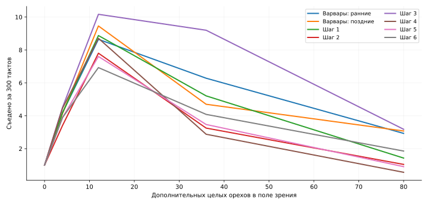

← Предыдущее исследование ВарваровОрехофобы: шесть шагов и неоднозначный результат
12 ноября 2026 · восемь сохранённых популяций · 368 соревнований · одиночные испытания и проверка всех мозгов.
Главный вывод: устойчивого избавления от проблем с плотными скоплениями нет. Самый интересный кандидат для дальнейшего обучения — шаг 3: он лучше добывает еду среди умеренного скопления. Шаг 6 не закрепил это преимущество. При этом ни одна стадия не потеряла базовую цепочку «расколоть → подойти → съесть».
Что сравниваем
Есть два пресета «Варвары»: 175 мозгов из предыдущего отчёта и более поздние 168 мозгов. Основной контроль здесь — поздний. В шагах 1–6 соответственно 61, 92, 117, 117, 113 и 189 мозгов. Архитектура у всех одинаковая: 733 → 32 → 6, 23 686 параметров. Эти проверки измеряют поведение сохранённых весов; они не восстанавливают историю твоих настроек обучения.
Ореховая куча: проверяем настоящую добычу
Один дикарь, один целый орех впереди и дополнительные орехи в его поле зрения. 96 испытаний на каждую плотность и популяцию, 300 тактов, без размножения и нового падения. Орехи не успевают испортиться. Начало в центре поля 64×64, далеко от стен. Здесь оценивается реально съеденная еда, а не только первое решение.

Шаг 3: при 36 дополнительных орехах съедает 9,2 против 4,7 у поздних Варваров — почти вдвое больше. При 80 орехах преимущество исчезает: 3,2 против 3,1. Шаг 6: 4,1 и 1,9 соответственно. Его проблема при очень плотном скоплении осталась и по этому тесту стала сильнее.
С готовым орехом под ногами картина сходная. Значит, дело не сводится к одному неудачному выбору удара. Термин «орехофобия» здесь — разговорное название сбоя поведения в плотной сцене, а не установленная эмоция или внутреннее намерение.
Базовые навыки сохранены
Каждый мозг проверен по четыре раза в четырёх задачах: целый орех впереди, под собой, справа и сзади. Все испытания успешны в пределах 300 тактов. С орехом впереди практически все укладываются в минимальные три действия. Это не гарантия успеха при любых обстоятельствах: вокруг нет отвлекающей кучи.
В одиночных мирах появилась цена специализации
Числа — среднее съеденное до смерти или 5 000 тактов, по 192 испытания. Ранние смерти включены. В обычном мире, при обилии падающих орехов и при долгом сроке их жизни все шесть шагов добывают меньше поздних Варваров. Навык добычи быстро исчезающей еды в значительной степени сохранился, но шаг 4 заметно хуже, шаг 6 тоже ниже контроля. Это уже потеря полезного качества, несмотря на сохранённые простые реакции.
Конкуренция даёт другой рейтинг
Каждый матч: 16 дикарей каждой популяции, 32×32, восемь деревьев, до 10 000 тактов, размножение и мутации включены. Победа — больше живых потомков в конце. В таблице победы более новой популяции. По шесть карт с перестановкой стартовых мест: 12 матчей — это шесть независимых карт, а не двенадцать.
Шаг 1 выигрывает 11/12 при обильном плодоношении, хотя один добывает хуже. Шаг 3 выигрывает 10/12 в обычном мире и 11/12 при долгоживущих орехах, но 0/12 при частом падении. Шаг 4 выигрывает все матчи на быстро исчезающей еде, одновременно оказываясь одним из худших одиночных добытчиков. Шаг 6 уступает поздним Варварам во всех обычных, богатых и долгоживущих мирах, но выигрывает 9/12 на коротком сроке еды.
Таким образом, «самостоятельность» и конкурентоспособность нельзя заменить одним числом. В совместном мире доступны орехи, расколотые другими. Но одних итоговых побед недостаточно, чтобы приписать конкретной стадии сознательное иждивенчество: роль могут играть размещение, размножение и взаимодействие политик.
Соседние шаги
По четыре карты с перестановкой мест. Шаг 6 проиграл шагу 5 все восемь богатых матчей и выиграл только два из восьми на коротком сроке. Прогресс по номеру шага явно не монотонный.
А стены?
По 256 одиночных испытаний. Во второй колонке вмешательства физические стены остаются, но отключены входы мозга, сообщающие о границе. Поздние Варвары и шаг 3 существенно выигрывают от отключения этого сигнала. У шага 4 плохие результаты сохраняются даже без видимой стены. Значит, объяснить всю деградацию только незнакомством со стенами нельзя. Это диагностическое вмешательство, не рекомендация сделать их слепыми.
Что я бы оставил для следующего обучения
- Шаг 3 — для самостоятельной работы с умеренными скоплениями, с обязательной проверкой 80 орехов.
- Шаг 1 — как конкурентный контроль в мире с частым падением.
- Поздних Варваров — сохранить как контроль общей самостоятельной добычи.
- Шаг 6 не заменяет предыдущие. В проверенных условиях он не выглядит удачным итоговым улучшением.
Дальше полезнее отбирать по добыче одиночки в нескольких плотностях, чем просто повышать плотность в общем мире. Проверять базовый орех, умеренную и очень плотную кучу, плюс короткий срок пищи. Тогда будет видно, не покупается ли одно улучшение потерей другого. Эти новые циклы обучения здесь не запускались.
Протокол и ограничения
Миры обычные, без сезонов. База: энергия ореха 60, расход жизни 0,25, удар 2 энергии, площадь 3×1, максимум возраста 10 000. Одиночный мир 16×16 с двумя деревьями; обычное падение 0,04, богатое 0,16. Сроки целого/расколотого ореха: 1 200/400, короткие 30/15, длинные 5 000/5 000. Отравление в основных сравнениях отключено. Одиночки не размножаются; в конкурсах мутация 0,25 и предел 256 жителей.
Одинаковые наборы случайных карт использованы для сопоставимости. Мозги выбирались из сохранённых пулов; в маленьких пулах повторялись на разных случайных последовательностях. Это не независимые повторения всей эволюции, поэтому результаты не доказывают, что любой повтор твоего обучения даст тот же эффект. Небольшие различия не следует переоценивать. Первые пять батарей ранних Варваров взяты из предыдущего исследования с теми же исходными данными и протоколом; новые тесты куч проведены для всех восьми пулов.
Исходный симулятор совпадает с замороженной версией предыдущего исследования. Дополнительный стенд отдельно задаёт богатые миры, долгий срок жизни и контролируемые кучи. Живое приложение и твои пресеты не изменялись.
Скачать сырые результаты и код · Краткие численные результаты · Состав пресетов и SHA-256. Сами веса мозгов не опубликованы.